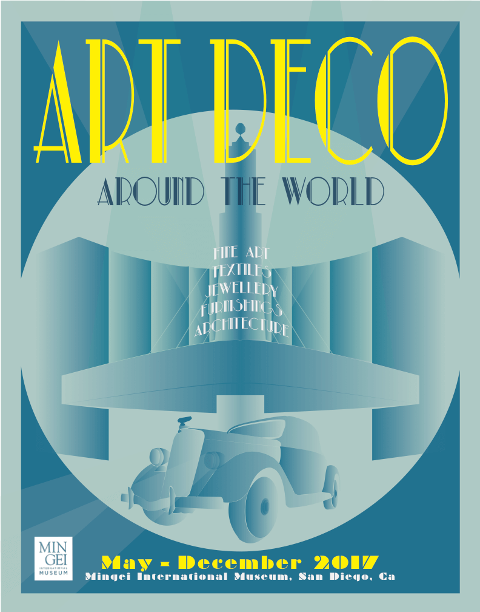

Poster Design
Art Deco Exhibition
This poster is announcing an Art Deco exhibition which gives an overview of art and architecture in the 1920s and 1930s and showcases pieces from around the world.
It was awarded Best In Class in the Computer Graphics Category at the San Diego County Fair 2017.
